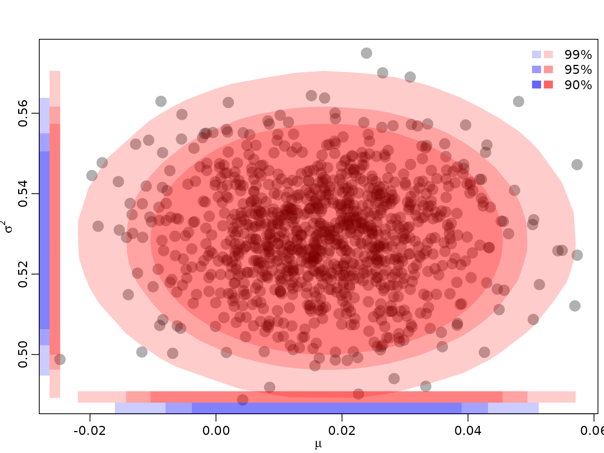
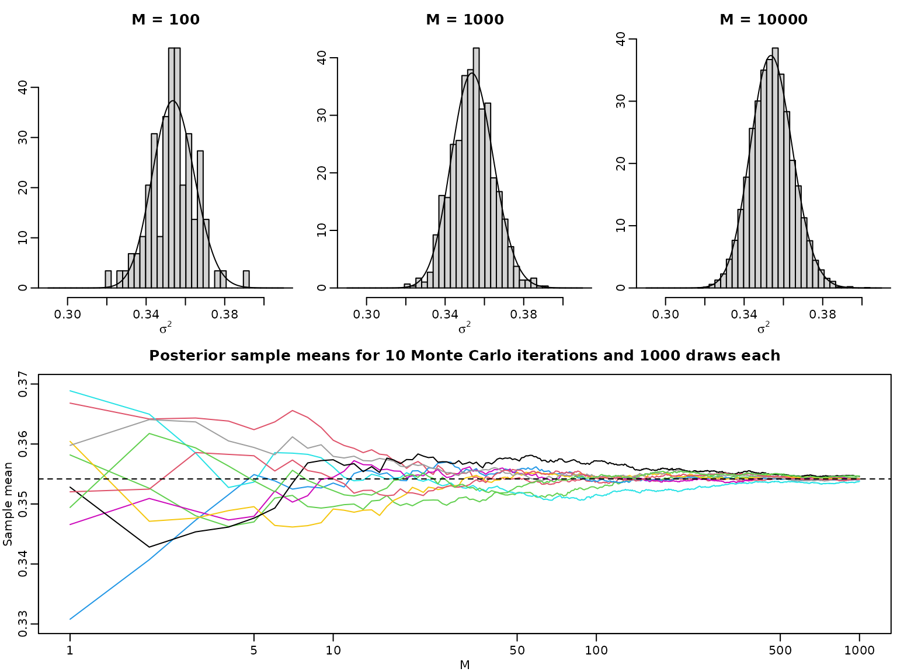
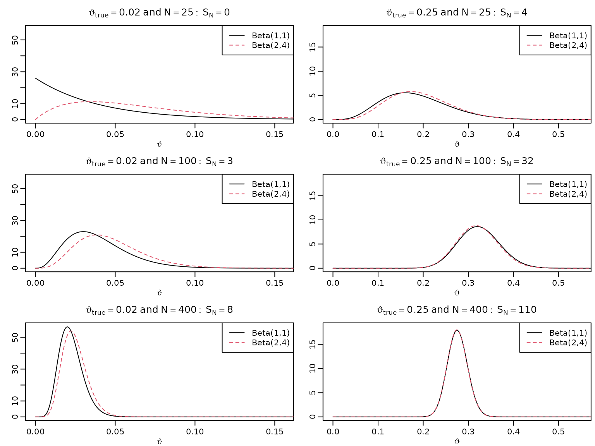
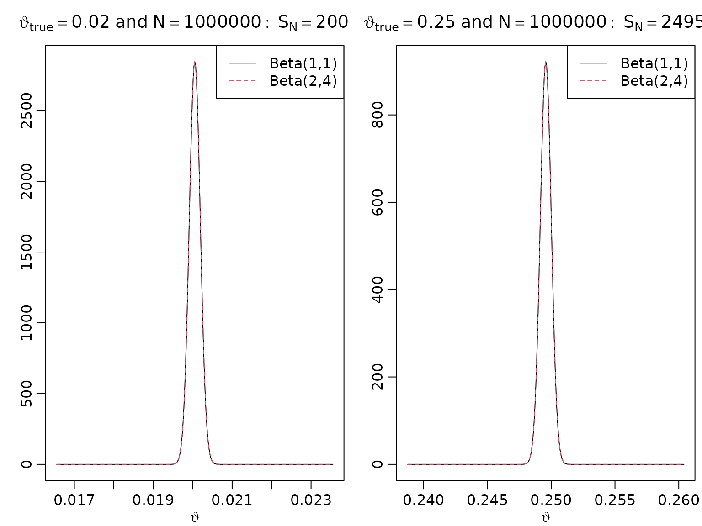
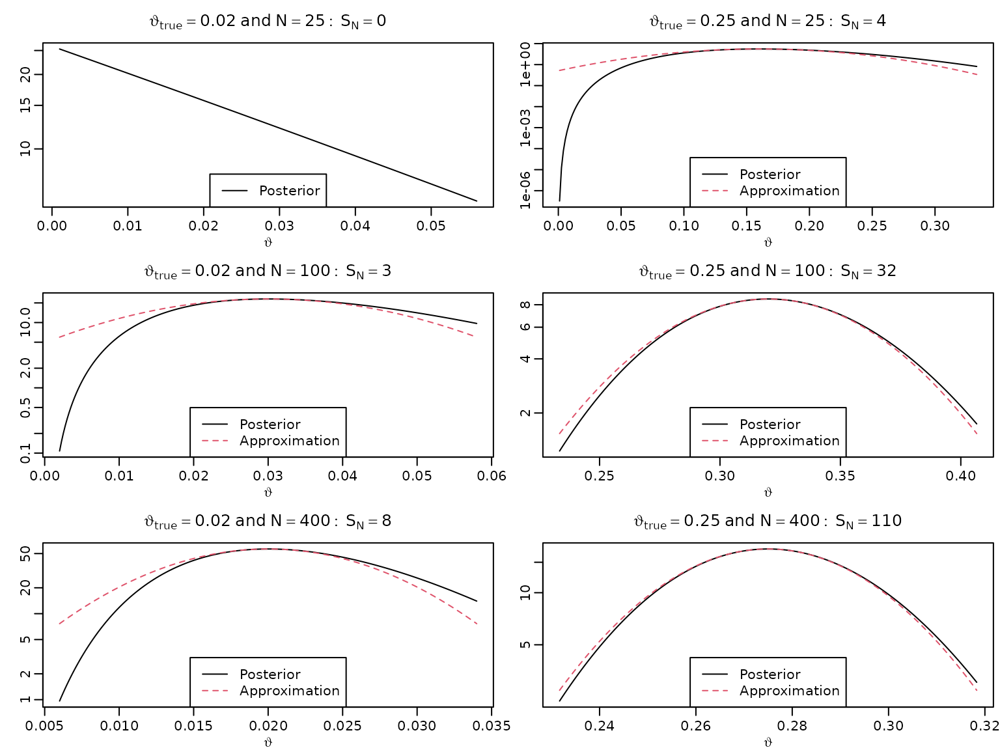

Chapter 5: Learning More About Bayesian Learning
Chapter05.RmdSection 5.2: Conjugate or non-conjugate?
Example 5.3 / Figure 5.1: The adaptive nature of Bayesian learning
We illustrate the adaptive nature of Bayesian learning (also referred to as sequential updating or on-line learning) via the beta-Bernoulli model from earlier.
set.seed(42)
a0 <- 1
b0 <- 1
N <- 100
thetatrue <- c(0, .1, .5)
theta <- seq(0, 1, length.out = 201)
for (i in seq_along(thetatrue)) {
plot(theta, dbeta(theta, a0, b0), type = 'l', ylim = c(0, 11),
col = rgb(0, 0, 0, .2), xlab = expression(vartheta), ylab = '',
main = bquote(vartheta[true] == .(thetatrue[i])))
succ <- fail <- 0L
for (j in seq_len(N)) {
if (rbinom(1, 1, thetatrue[i])) succ <- succ + 1L else fail <- fail + 1L
lines(theta, dbeta(theta, a0 + succ, b0 + fail), col = rgb(0, 0, 0, .2 + .4*j/N))
}
legend('topright', paste("N =", c(0, 20, 40, 60, 80, 100)), lty = 1,
col = rgb(0, 0, 0, .2 + .4*c(0, 20, 40, 60, 80, 100)/N))
}Section 5.3.2: Uncertainty quantification
Example 5.5: Quantifying and visualizing posterior uncertainty for the mean and the variance of a normal distribution
We re-use the posterior established in Chapter 4, where we modeled the CHF/USD exchange rate as a normal distribution with unknown mean and variance.
library("BayesianLearningCode")
posteriorjoint <- function(mu, sigma2, ybar, s2, N) {
dnorm(mu, ybar, sqrt(sigma2 / N)) *
dinvgamma(sigma2, (N - 1) / 2, N * s2 / 2)
}First, we read in the data once more.
data("exrates", package = "stochvol")
y <- 100 * diff(log(exrates$USD / exrates$CHF))
N <- length(y)
ybar <- mean(y)
s2 <- var(y) * (N - 1) / NNow, we simulate from the posterior by Monte Carlo, i.e., we draw many times from the marginal posterior , and then, conditioning on these draws, from .
ndraws <- 100000
sigma2draws <- rinvgamma(ndraws, (N - 1) / 2, N * s2 / 2)
mudraws <- rnorm(ndraws, ybar, sqrt(sigma2draws / N))
draws <- data.frame(mu = mudraws, sigma2 = sigma2draws)Next, we need to fix .
alpha <- c(.01, .05, .1)To approximate the bivariate HPD regions for our posterior, we obtain the functional values and keep the top 99, 95, 90 percent, respectively.
densjoint <- posteriorjoint(draws$mu, draws$sigma2, ybar, s2, N)
HPDdrawsjoint <- vector("list", length(alpha))
for (i in seq_along(alpha)) {
HPDdrawsjoint[[i]] <- draws[rank(densjoint) > floor(ndraws * alpha[i]),]
}To visualize, we compute the convex hull of the remaining draws. Note that we randomly exclude some draws for visualization only in order to avoid plotting too many overlapping points. We also draw the projections on the two axes, yielding the corresponding univariate regions (intervals). In addition, we also draw the univariate regions (intervals) from the corresponding marginals.
toplot <- sample.int(nrow(draws), 1000)
plot(draws[toplot,], pch = 16, col = rgb(0, 0, 0, .3), cex = 2,
xlab = expression(mu), ylab = expression(sigma^2))
legend("topright", paste0(100 * (1 - alpha), "%"),
fill = rgb(1, 0, 0, c(.2, .4, .6)), border = NA, bty = "n")
legend("topright", rep(" ", 3),
fill = rgb(0, 0, 1, c(.2, .4, .6)), border = NA, bty = "n")
for (i in seq_along(alpha)) {
hullind <- chull(HPDdrawsjoint[[i]])
polygon(HPDdrawsjoint[[i]][hullind,], col = rgb(1, 0, 0, .2), border = NA)
rect(min(HPDdrawsjoint[[i]]$mu),
par("usr")[3] + .03 * diff(par("usr")[3:4]),
max(HPDdrawsjoint[[i]]$mu),
par("usr")[3] + .06 * diff(par("usr")[3:4]),
col = rgb(1, 0, 0, .2), border = NA)
rect(par("usr")[1] + .03 * 5 / 8 * diff(par("usr")[1:2]),
min(HPDdrawsjoint[[i]]$sigma2),
par("usr")[1] + .06 * 5 / 8 * diff(par("usr")[1:2]),
max(HPDdrawsjoint[[i]]$sigma2),
col = rgb(1, 0, 0, .2), border = NA)
}
posteriormu <- function(mu, ybar, s2, N) {
dstudt(mu, ybar, sqrt(s2 / (N - 1)), N - 1)
}
posteriorsigma2 <- function(sigma2, s2, N) {
dinvgamma(sigma2, (N - 1) / 2, N * s2 / 2)
}
HPDdrawsmu <- HPDdrawssigma2 <- vector("list", length(alpha))
for (i in seq_along(alpha)) {
densmu <- posteriormu(draws$mu, ybar, s2, N)
HPDdrawsmu[[i]] <- draws$mu[rank(densmu) > floor(ndraws * alpha[i])]
rect(min(HPDdrawsmu[[i]]),
par("usr")[3],
max(HPDdrawsmu[[i]]),
par("usr")[3] + .03 * diff(par("usr")[3:4]),
col = rgb(0, 0, 1, .2), border = NA)
denssigma2 <- posteriorsigma2(draws$sigma2, s2, N)
HPDdrawssigma2[[i]] <- draws$sigma2[rank(denssigma2) > floor(ndraws * alpha[i])]
rect(par("usr")[1],
min(HPDdrawssigma2[[i]]),
par("usr")[1] + .03 * 5 / 8 * diff(par("usr")[1:2]),
max(HPDdrawssigma2[[i]]),
col = rgb(0, 0, 1, .2), border = NA)
}
Example 5.6: The law of large numbers in a Bayesian context
We again revisit the CHF-USD exchange rate data from the previous chapter. We assumed that and implemented an unnormalized version of .
post_unnormalized_nonvec <- function(sigma2, y, nu, log = FALSE) {
logdens <- -length(y) / 2 * log(sigma2) -
(nu + 1) / 2 * sum(log(1 + y^2 / (nu * sigma2))) - log(sigma2)
if (log) logdens else exp(logdens)
}
post_unnormalized <- Vectorize(post_unnormalized_nonvec, "sigma2")
nu <- 7
sigma2 <- seq(0.25, 0.45, length.out = 3000)
pdf_u <- post_unnormalized(sigma2, y = y, nu = nu)
pdf_u <- pdf_u / max(pdf_u)
cdf <- cumsum(pdf_u) / sum(pdf_u)To compute the normalizing constant , we again use the trapezoid rule. In addition, we compute the posterior expectation.
resolution <- 100
grid <- seq(0.25, 0.45, length.out = resolution + 1)
integrand <- post_unnormalized(grid, y = y, nu = nu)
C <- sum(diff(grid) * .5 * (head(integrand, -1) + tail(integrand, -1)))
integrand2 <- grid * integrand
e <- sum(diff(grid) * .5 * (head(integrand2, -1) + tail(integrand2, -1))) / CNow we show that the histogram of the posterior draws converges to the posterior density, and the sample average of the posterior draws converges to the posterior expectation. First, we obtain posterior draws, as in the previous chapter.
Mtotal <- 10000
unifdraws <- runif(Mtotal, 0, cdf[length(cdf)])
leftind <- findInterval(unifdraws, cdf)
rightind <- leftind + 1L
distprop <- (unifdraws - cdf[leftind]) / (cdf[rightind] - cdf[leftind])
sigma2draws <- sigma2[leftind] + distprop *
(sigma2[rightind] - sigma2[leftind])Now, we visualize batches of these draws.
for (M in c(100, 1000, 10000)) {
hist(sigma2draws[seq_len(M)], probability = TRUE, xlab = expression(sigma^2),
ylab = "", main = paste0("M = ", M),
breaks = seq(0.29, 0.41, length.out = 42))
lines(sigma2, post_unnormalized(sigma2, y, nu = nu) / C)
}
nlines <- 10
M <- Mtotal / nlines
plot(seq_len(M), NULL, ylim = c(0.33, 0.37), xlab = "M", ylab = "Sample mean",
log = "x", main = paste("Posterior sample means for", nlines,
"Monte Carlo iterations and", M, "draws each"))
for (i in seq_len(nlines)) {
indices <- seq(1 + (i - 1) * M, i * M)
lines(seq_len(M), cumsum(sigma2draws[indices]) / seq_len(M), col = i + 1)
}
abline(h = e, lty = 2)
Section 5.4
Figure 5.4: Bayesian asymptotics 1
To reproduce this figure, we again re-use the theory from Chapter 3 (the beta-Bernoulli model).
set.seed(2)
thetatrue <- c(0.02, 0.25)
N <- c(25, 100, 400)
settings <- expand.grid(N = N, thetatrue = thetatrue)
SN <- matrix(rbinom(6, settings$N, settings$thetatrue), nrow = 3, ncol = 2)
theta <- seq(0, 1, .0005)
for (i in seq_along(N)) {
for (j in seq_along(thetatrue)) {
aN <- SN[i,j] + 1
bN <- N[i] - SN[i,j] + 1
plot(theta, dbeta(theta, aN, bN), type = "l", xlab = expression(vartheta),
ylab = "", main = bquote(vartheta[true] == .(thetatrue[j]) ~
"and" ~ N == .(N[i]): ~ S[N] == .(SN[i,j])),
xlim = c(0, 1.1 * sqrt(thetatrue[j])),
ylim = c(0, 9.5 / sqrt(thetatrue[j] + 0.008)))
aN <- SN[i,j] + 2
bN <- N[i] - SN[i,j] + 4
lines(theta, dbeta(theta, aN, bN), lty = 2, col = 2)
legend("topright", c("Beta(1,1)", "Beta(2,4)"), lty = c(1, 2),
col = 1:2)
}
}
Figure 5.5: Bayesian asymptotics 2
As above, just with higher sample size.
bigN <- 1000000
SbigN <- rbinom(2, bigN, thetatrue)
for (i in seq_along(thetatrue)) {
aN <- SbigN[i] + 1
bN <- bigN - SbigN[i] + 1
asySD <- sqrt(thetatrue[i] * (1 - thetatrue[i]) / bigN)
theta <- seq(SbigN[i] / bigN - 25 * asySD, SbigN[i] / bigN + 25 * asySD,
length.out = 333)
plot(theta, dbeta(theta, aN, bN), type = "l", xlab = expression(vartheta),
ylab = "",
main = bquote(vartheta[true] == .(thetatrue[i]) ~ "and" ~ N ==
.(format(bigN, scientific = FALSE)): ~ S[N] == .(SbigN[i])))
aN <- SbigN[i] + 2
bN <- bigN - SbigN[i] + 4
lines(theta, dbeta(theta, aN, bN), lty = 2, col = 2)
legend("topright", c("Beta(1,1)", "Beta(2,4)"), lty = c(1, 2), col = 1:2)
}
Figure 5.6: Bayesian asymptotics 3
We now want to approximate the log posteriors via quadratic polynomials and visualize these.
for (i in seq_along(N)) {
for (j in seq_along(thetatrue)) {
aN <- SN[i,j] + 1
bN <- N[i] - SN[i,j] + 1
asySD <- sqrt(thetatrue[j] * (1 - thetatrue[j]) / N[i])
theta <- seq(max(0.001, SN[i,j] / N[i] - 2 * asySD),
SN[i,j] / N[i] + 2 * asySD,
length.out = 222)
plot(theta, dbeta(theta, aN, bN), type = "l", xlab = expression(vartheta),
ylab = "", main = bquote(vartheta[true] == .(thetatrue[j]) ~
"and" ~ N == .(N[i]): ~ S[N] == .(SN[i,j])),
log = "y")
approx <- function(theta, thetastar, n, log = FALSE) {
res <- dbeta(thetastar, aN, bN, log = TRUE) -
0.5 * n * 1 / (thetastar * (1 - thetastar)) * (theta - thetastar)^2
if (log) res else exp(res)
}
lines(theta, approx(theta, SN[i,j] / N[i], N[i]), col = 2, lty = 2)
if (i == 1L && j == 1L) {
legend("bottom", "Posterior", lty = 1)
} else {
legend("bottom", c("Posterior", "Approximation"), lty = c(1, 2), col = 1:2)
}
}
}
Table 5.1: Point estimates
We now compute various point estimates under several settings. Note that we use the same number of 1s () as before.
options(knitr.kable.NA = '')
a0 <- c(1, 2)
b0 <- c(1, 4)
set <- expand.grid(N = N, thetatrue = thetatrue, a0 = a0)
set$b0 <- rep(b0, each = nrow(set) / 2)
set$SN <- rep(SN, 2)
set$aN <- set$SN + set$a0
set$bN <- set$N - set$SN + set$b0
postmean <- set$aN / (set$aN + set$bN)
postmode <- (set$aN - 1) / (set$aN + set$bN - 2)
thetaML <- postmode[1:6]
res <- cbind(thetatrue = c(thetatrue[1], NA, NA, thetatrue[2], NA, NA),
N = rep(N, 2),
SN = as.vector(SN),
ML = thetaML,
meanB11 = postmean[1:6],
modeB11 = postmode[1:6],
meanB42 = postmean[7:12],
modeB42 = postmode[7:12])
knitr::kable(round(res, 3))| thetatrue | N | SN | ML | meanB11 | modeB11 | meanB42 | modeB42 |
|---|---|---|---|---|---|---|---|
| 0.02 | 25 | 0 | 0.000 | 0.037 | 0.000 | 0.065 | 0.034 |
| 100 | 3 | 0.030 | 0.039 | 0.030 | 0.047 | 0.038 | |
| 400 | 8 | 0.020 | 0.022 | 0.020 | 0.025 | 0.022 | |
| 0.25 | 25 | 4 | 0.160 | 0.185 | 0.160 | 0.194 | 0.172 |
| 100 | 32 | 0.320 | 0.324 | 0.320 | 0.321 | 0.317 | |
| 400 | 110 | 0.275 | 0.276 | 0.275 | 0.276 | 0.275 |
Table 5.2: Interval estimates
We now compute frequentist and Bayesian CIs.
# Confidence intervals
leftconf <- thetaML - qnorm(.975) * sqrt(thetaML * (1 - thetaML) / set$N[1:6])
rightconf <- thetaML + qnorm(.975) * sqrt(thetaML * (1 - thetaML) / set$N[1:6])
# HPD intervals
resolution <- 1000
grid <- seq(0, 1, length.out = resolution + 1)
dist <- 0.95 * resolution
leftHPD <- rightHPD <- rep(NA_real_, 6)
for (i in 1:6) {
qs <- qbeta(grid, set$aN[i], set$bN[i])
minimizer <- which.min(diff(qs, lag = dist))
leftHPD[i] <- qs[minimizer]
rightHPD[i] <- qs[minimizer + dist]
}
res <- cbind(res[,1:3], leftconf, rightconf, leftHPD, rightHPD)
knitr::kable(round(res, 3))| thetatrue | N | SN | leftconf | rightconf | leftHPD | rightHPD |
|---|---|---|---|---|---|---|
| 0.02 | 25 | 0 | 0.000 | 0.000 | 0.000 | 0.109 |
| 100 | 3 | -0.003 | 0.063 | 0.007 | 0.077 | |
| 400 | 8 | 0.006 | 0.034 | 0.009 | 0.037 | |
| 0.25 | 25 | 4 | 0.016 | 0.304 | 0.054 | 0.331 |
| 100 | 32 | 0.229 | 0.411 | 0.234 | 0.414 | |
| 400 | 110 | 0.231 | 0.319 | 0.233 | 0.320 |
Example 5.10 / Table 5.3: Coverage probabilities under the beta-Bernoulli model
For a (frequentist) estimate of the coverage probabilities, we simulate many data sets for each of the parameter configurations and check how often the intervals contain the true parameter.
alpha <- 0.05
nrep <- 10000
resolution <- 1000
grid <- matrix(seq(0, 1, length.out = resolution + 1),
nrow = resolution + 1,
ncol = nrep)
dist <- (1 - alpha) * resolution
inconf <- inHPD <- inequal <- lenconf <- lenHPD <- lenequal <-
matrix(NA, nrep, 6)
for (i in 1:6) {
SN <- rbinom(nrep, set$N[i], set$thetatrue[i])
aN <- SN + set$a0[i]
bN <- set$N[i] - SN + set$b0[i]
thetaML <- (aN - 1) / (aN + bN - 2)
# Asymptotic intervals
leftconf <- thetaML - qnorm(1 - alpha / 2) *
sqrt(thetaML * (1 - thetaML) / set$N[i])
rightconf <- thetaML + qnorm(1 - alpha / 2) *
sqrt(thetaML * (1 - thetaML) / set$N[i])
inconf[, i] <- leftconf <= set$thetatrue[i] & set$thetatrue[i] <= rightconf
lenconf[, i] <- rightconf - leftconf
# HPD intervals
leftHPD <- rightHPD <- rep(NA_real_, nrep)
qs <- qbeta(grid,
rep(aN, each = resolution + 1), rep(bN, each = resolution + 1))
minimizer <- apply(diff(qs, lag = dist), 2, which.min)
# minimizer <- max.col(-t(diff(qs, lag = dist))) # chooses at random in case of ties
selector <- minimizer + (seq_along(minimizer) - 1) * (resolution + 1)
leftHPD <- qs[selector]
rightHPD <- qs[selector + dist]
inHPD[, i] <- leftHPD <= set$thetatrue[i] & set$thetatrue[i] <= rightHPD
lenHPD[, i] <- rightHPD - leftHPD
# equal-tailed intervals
leftequal <- qbeta(alpha / 2, aN, bN)
rightequal <- qbeta(1 - alpha / 2, aN, bN)
inequal[, i] <- leftequal <= set$thetatrue[i] & set$thetatrue[i] <= rightequal
lenequal[, i] <- rightequal - leftequal
}
res <- cbind(res[,1:2],
asy_cover = colMeans(inconf),
HPD_cover = colMeans(inHPD),
equal_cover = colMeans(inequal),
asy_len = colMeans(lenconf),
HPD_len = colMeans(lenHPD),
equal_len = colMeans(lenequal))
knitr::kable(round(res, 2))| thetatrue | N | asy_cover | HPD_cover | equal_cover | asy_len | HPD_len | equal_len |
|---|---|---|---|---|---|---|---|
| 0.02 | 25 | 0.40 | 0.99 | 0.91 | 0.07 | 0.14 | 0.16 |
| 100 | 0.86 | 0.98 | 0.95 | 0.05 | 0.06 | 0.06 | |
| 400 | 0.90 | 0.94 | 0.95 | 0.03 | 0.03 | 0.03 | |
| 0.25 | 25 | 0.89 | 0.94 | 0.96 | 0.33 | 0.31 | 0.32 |
| 100 | 0.94 | 0.95 | 0.95 | 0.17 | 0.17 | 0.17 | |
| 400 | 0.94 | 0.95 | 0.94 | 0.08 | 0.08 | 0.08 |
Example 5.11: Coverage probabilities under the Poisson-gamma model
As above, but for data from a -distribution. We estimate the mean from data points and construct CIs. Recall that the posterior under a flat prior is
We start by simulating the data and computing sample means and sample variances.
mutrue <- 5
N <- 24
dat <- matrix(rpois(N * nrep, mutrue), nrep, N)
means <- rowMeans(dat)
vars <- apply(dat, 1, var)Next, we compute asymptotic intervals based on sample means and sample variances.
leftconf1 <- means - qnorm(1 - alpha / 2) * sqrt(means / N)
rightconf1 <- means + qnorm(1 - alpha / 2) * sqrt(means / N)
inconf1 <- leftconf1 <= mutrue & mutrue <= rightconf1
leftconf2 <- means - qnorm(1 - alpha / 2) * sqrt(vars / N)
rightconf2 <- means + qnorm(1 - alpha / 2) * sqrt(vars / N)
inconf2 <- leftconf2 <= mutrue & mutrue <= rightconf2For the Baysian variants, we look compute the equal-tailed and the HPD intervals.
leftequal <- qgamma(alpha / 2, N * means + 1, N)
rightequal <- qgamma(1 - alpha / 2, N * means + 1, N)
inequal <- leftequal <= mutrue & mutrue <= rightequal
qs <- qgamma(grid, rep(N * means + 1, each = resolution + 1), N)
minimizer <- apply(diff(qs, lag = dist), 2, which.min)
selector <- minimizer + (seq_along(minimizer) - 1) * (resolution + 1)
leftHPD <- qs[selector]
rightHPD <- qs[selector + dist]
inHPD <- leftHPD <= mutrue & mutrue <= rightHPDFinally, we compile and print the results.
res <- cbind(asy_mean_coverage = mean(inconf1),
asy_var_coverage = mean(inconf2),
equal_coverage = mean(inequal),
HPD_coverage = mean(inHPD))
knitr::kable(t(round(res, 2)))| asy_mean_coverage | 0.95 |
| asy_var_coverage | 0.94 |
| equal_coverage | 0.95 |
| HPD_coverage | 0.95 |
Example 5.12: Uncertainty quantification for various count data
We revisit the accidents and the eye tracking data sets and compute means and variances.
data("accidents")
data("eyetracking")
y1 <- accidents[, c("seniors_accidents", "children_accidents")]
y2 <- eyetracking$anomalies
N <- c(rep(nrow(y1), ncol(y1)), length(y2))
means <- c(colSums(y1), eyetracking_anomalies = sum(y2)) / N
vars <- c(apply(y1, 2, var), var(y2))The asymptotic and the Bayesian intervals can be computed as above.
# asymptotic intervals based on sample means
lconf1 <- means - qnorm(1 - alpha / 2) * sqrt(means / N)
rconf1 <- means + qnorm(1 - alpha / 2) * sqrt(means / N)
# asymptotic intervals based on sample means and variances
lconf2 <- means - qnorm(1 - alpha / 2) * sqrt(vars / N)
rconf2 <- means + qnorm(1 - alpha / 2) * sqrt(vars / N)
# equal-tailed Bayesian intervals under a flat prior
lequal <- qgamma(alpha / 2, N * means + 1, N)
requal <- qgamma(1 - alpha / 2, N * means + 1, N)
# HPD intervals under a flat prior
qs <- qgamma(grid[, seq_along(means)],
rep(N * means + 1, each = resolution + 1),
rep(N, each = resolution + 1))
minimizer <- apply(diff(qs, lag = dist), 2, which.min)
selector <- minimizer + (seq_along(minimizer) - 1) * (resolution + 1)
lHPD <- qs[selector]
rHPD <- qs[selector + dist]
res <- cbind(lconf1, rconf1, lconf2, rconf2, lequal, requal, lHPD, rHPD)
knitr::kable(round(res, 3))| lconf1 | rconf1 | lconf2 | rconf2 | lequal | requal | lHPD | rHPD | |
|---|---|---|---|---|---|---|---|---|
| seniors_accidents | 4.926 | 5.574 | 4.895 | 5.605 | 4.936 | 5.584 | 4.933 | 5.581 |
| children_accidents | 1.647 | 2.030 | 1.655 | 2.022 | 1.657 | 2.041 | 1.653 | 2.037 |
| eyetracking_anomalies | 3.159 | 3.891 | 2.356 | 4.693 | 3.177 | 3.911 | 3.171 | 3.904 |
Section 5.5: The Role of the Prior for Bayesian Learning
Example 5.13 / Figure 5.7: Prior (non-)invariance illustration
First, we define the function , a modified version of the native to return the improper kernel if both parameters are 0 (and resort to the original otherwise).
dbetamod <- function(x, a, b) {
if (a == 0 && b == 0) {
x^-1 * (1 - x)^-1
} else {
dbeta(x, a, b)
}
}Next, we define the density function of by using the law of transformation of densities.
Now we can plot.
theta <- seq(0, 1, length.out = 200)
eta <- seq(-10, 10, length.out = 200)
plot(theta, dbetamod(theta, 1, 1), type = "l", ylab = "",
xlab = expression(vartheta), main = "B(1, 1)")
plot(theta, dbetamod(theta, 0.5, 0.5), type = "l", ylab = "",
xlab = expression(vartheta), main = "B(0.5, 0.5)")
plot(theta, dbetamod(theta, 0, 0), type = "l", ylab = "",
xlab = expression(vartheta), main = "B(0, 0)")
plot(eta, deta(eta, 1, 1), type = "l", ylab = "",
xlab = expression(eta))
plot(eta, deta(eta, 0.5, 0.5), type = "l", ylab = "",
xlab = expression(eta))
plot(eta, round(deta(eta, 0, 0), 10), type = "l", ylab = "",
xlab = expression(eta))